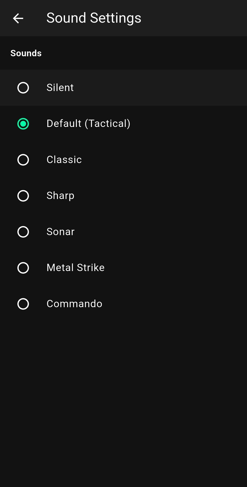

راهنمای کالیبراسیون فرکانس و سیگنالهای صوتی 🔊
نوع محرکهای صوتی پلتفرم بیپ رو بر اساس متد تمرینی و حساسیت سیستم شنوایی خودت شخصیسازی کن.

پروفایلهای صوتی در دسترس (Sound Profiles)
سیگنالهای صوتی نقش کلیدی در کاهش زمان رفلکس و تحریک قشر شنوایی مغز دارن. در این بخش میتونی از بین ۷ پروفایل صوتی متمایز، فرکانس بهینه خودت رو انتخاب کنی:
حذف کامل فرکانسهای صوتی. مناسب برای تمرینات رفلکس دیداری مطلق (Visual-Only) که در اونها فقط باید به فلاشهای نوری یا تغییرات رنگ صفحه واکنش نشون بدی.
صدای اصلی و پیشفرض برنامه. یک بوق نظامی سفت و سخت با طول موج کوتاه که برای ثبت کمترین تاخیر در پاسخهای حرکتی و چابکی کالیبره شده.
فرکانس نوستالژیک و استاندارد بیپ که یادآور زمانسنجهای ورزشی قدیمی و سنتیه؛ صدایی کاملاً یکنواخت و آشنا برای ذهن.
سیگنالی با فرکانس بسیار بالا و بُرش تیز. این صدا مستقیماً تمرکز لحظهای رو تحریک میکنه و مانع از پرت شدن حواس در محیطهای شلوغ میشه.
شبیهساز صدای رادارهای زیردریایی با اکو و عمق فرکانسی ملایم. یک محرک صوتی ایدهآل برای جلسات تمرینی طولانیمدت جهت جلوگیری از خستگی مفرط سیستم شنوایی.
طنین افکت برخورد فلز و شلیکهای مکانیکی. حس و حال تاکتیکال سنگینتری ایجاد میکنه و برای تمرینات رزمی و شبیهسازی فیلدهای عملیاتی عالیه.
یک سیگنال دستوریِ انفجاری و رادیویی با بیس عمیق. طراحی شده برای ایجاد بالاترین نرخ پاسخ عصبی-عضلانی در تمرینات سخت و پرفشار چابکی.
نکات و توصیههای کالیبراسیون صدا
برای دریافت بهترین نتیجه از تمرینات صوتی، توصیه میکنیم فرکانسهای صوتی رو بر اساس نوع مأموریت تمرینی خودت تغییر بدی. مثلاً برای رکوردهای سرعت واکنش صوتی خالص، استفاده از تم صوتی Sharp یا Default بالاترین چابکی سیستم عصبی رو برات فراهم میکنه. در حالی که برای رکوردهای رفلکس ترکیبی ذهنی، تم صوتی Sonar آرامش لازم برای محاسبات موازی رو به مغز میده.